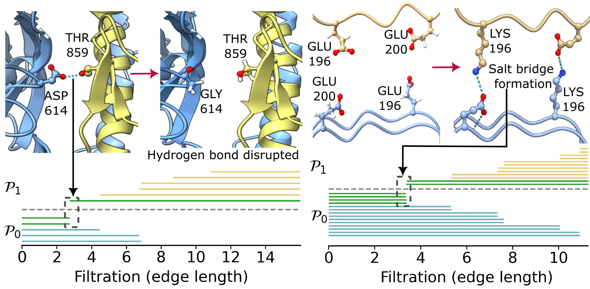
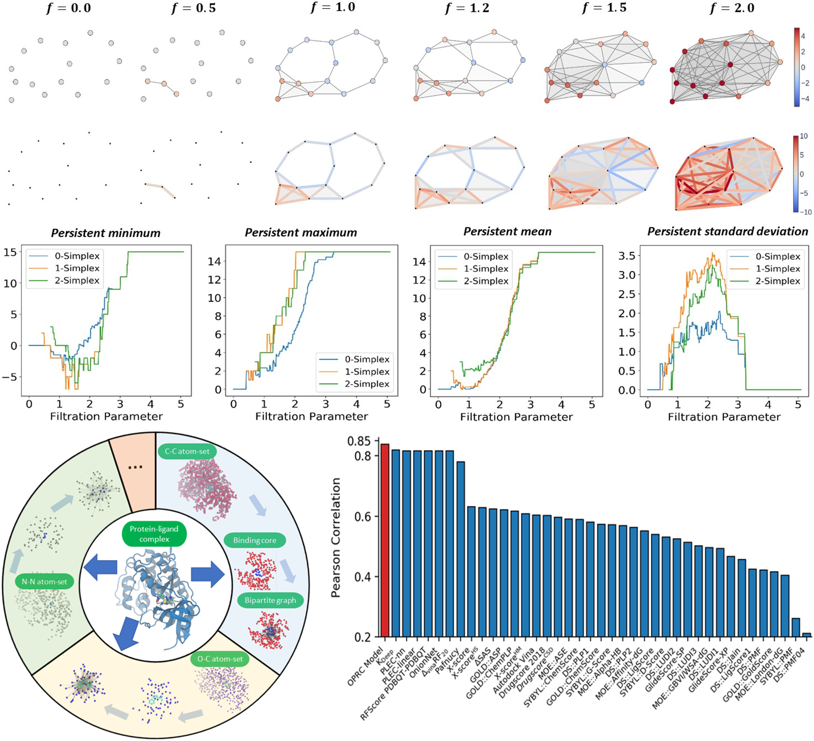

My research develops advanced mathematical frameworks—commutative algebra, topological data analysis, spectral data analysis, and differential geometry—into practical tools for AI-driven molecular science. These methods span from foundational mathematical theory to applied problems in drug design, protein engineering, materials discovery, and viral evolution, alongside a continuing line of work in complex analysis and operator theory. Selected publications are listed under each topic below. Full list with abstract is on the Publications page.
Mathematical Foundation of Data Science

Illustration of commutative algebraic barcodes capturing electrostatic interactions disrupted or formed upon mutation.
Biomolecular structures are extraordinarily high-dimensional—the 3D structure of human DNA alone spans more than 6,000 atoms, an 18,000-dimensional Euclidean space—and their sizes vary widely from molecule to molecule. This curse of dimensionality limits how effectively machine learning can be applied to biological data. We use commutative algebra, geometric, topological, and spectral data analysis to compress this high-dimensional information into low-dimensional, interpretable representations suited for downstream learning.
Commutative Algebra, Topological data analysis, Spectral data analysis, Geometric data analysis
Mathematical AI in Molecular Science [Poster, Review]
Molecular sciences generate vast, high-dimensional, multiscale experimental data whose nonlinear interactions resist conventional analysis. Topological data analysis—and its fusion with deep learning as topological deep learning—offers a way to uncover hidden structure in this data. We combine these mathematical descriptors with structure- and sequence-based features, including protein language models such as ESM-2, to build interpretable AI models for drug design, protein engineering, and materials discovery.

Illustration of persistent Ricci curvature-based featurization for protein-ligand binding affinity prediction. Top: simplicial complex filtration colored by curvature, with persistent minimum, maximum, mean, and standard deviation tracked across 0-, 1-, and 2-simplices. Bottom: decomposition of a protein-ligand complex into atom-set bipartite graphs, with the resulting model (OPRC) outperforming 20+ existing scoring functions on the PDBbind benchmark by Pearson correlation.
Drug design, Protein-protein interactions, Protein engineering, Materials discovery
Illustration of the workflow for predicting deep mutational scanning (DMS) of SARS-CoV-2 S protein RBD-ACE2 complexes using topological deep learning.
[Paper, Poster]
Viruses evolve rapidly through mutation, selection, and adaptation, producing new variants faster than traditional surveillance, diagnostics, and antibody or vaccine development can keep pace with—processes that are both slow and costly. By pairing AlphaFold 3 structure predictions with up-to-date experimental mutational scanning data, our models forecast how emerging variants and cross-species mutations affect binding and infectivity. The same reasoning applies to antibiotic resistance and cancer therapeutics: AI and mathematical data-driven approaches are needed to complement experimental screening in order to keep up with the rapid evolution of pathogens.
Virus evolution, Cross-species transmission, Deep mutational scanning [Poster]
The Korenblum Maximum Principle is an important open problem in complex analysis, standing as one of the fundamental properties of complex function spaces that remains unsolved. First conjectured in 1991, the principle was introduced by Boris Korenblum for the classical Bergman space $A^2(\mathbb{D})$. It states that for two holomorphic functions $f$ and $g$ in the unit disk, if $|f(z)| \le |g(z)|$ for all $z$ in some annulus $c < |z| < 1$, then $\Vert f \Vert \le \Vert g \Vert$. The largest value of $c$ for which this holds still remains unknown. Together with H. K. Le, we have contributed several results on the principle for some weighted Bergman spaces and the finite/infinite intersections of weighted Fock spaces, and recently formulated and studied the principle under weighted Hilbert spaces of entire Dirichlet series with real frequencies for the first time. This work also naturally overlaps between extremal problems in complex analysis and operators acting on complex function spaces as well.